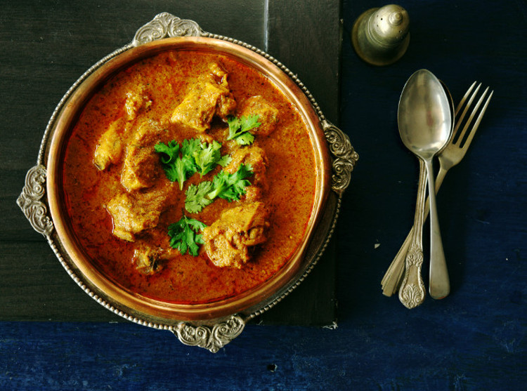

Butter Chicken - the quentessential indian dish for the non indian populace. Made using a variety of spices and mixed with a cashew cream and a distinct lack of chilli, this dish will propel you through the gateway to hard curries.